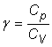
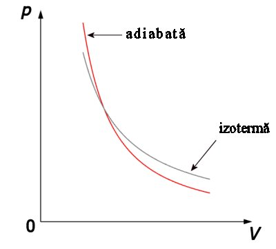
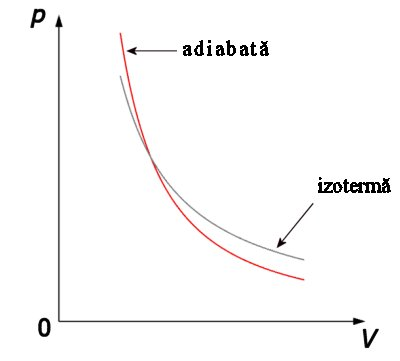
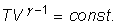
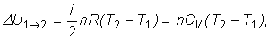
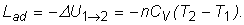

Numim transformare adiabatică transformarea pe parcursul
căreia numărul de moli nu se modifică şi sistemul nu schimbă energie sub formă de căldură cu mediul său.
Numim transformare adiabatică transformarea pe parcursul
căreia numărul de moli nu se modifică şi sistemul nu schimbă energie sub formă de căldură cu mediul său.
Elemente de termodinamică. |
Transformări simple ale gazului ideal |
E-7. |
Transformarea adiabatică |
Numim transformare adiabatică transformarea pe parcursul
căreia numărul de moli nu se modifică şi sistemul nu schimbă energie sub formă de căldură cu mediul său.
Transferul de energie sub formă de căldură poate fi limitat prin izolare termică a sistemului faţă de mediul său.
Numim perete adiabatic un perete care nu permite
transferul de energie sub formă de căldură.
Un perete gros, confecţionat dintr−un material slab conductor termic şi care reflectă radiaţia termică este o bună aproximaţie de perete adiabatic. Un termos este o incintă aproape adiabatică.
Izolarea termică nu este niciodată perfectă, însă transferul de energie sub formă de căldură durează − ceaiul fierbinte dintr−un termos ajunge în echilibru termic cu mediul său după mai multe ore. Cantitatea de căldură schimbată cu mediul într−o singură secundă este neglijabilă. Oricare proces rapid din interiorul termosului are loc aproape fără schimb de căldură!
Procesele rapide sunt aproape adiabatice.
 Provocarea 7-1
Provocarea 7-1
Care este relaţia dintre parametrii variabili ai unui gaz ideal care participă la o transformare adiabatică?
Pe parcursul unei transformări adiabatice, doar numărul de moli rămâne constant: presiunea, volumul şi temperatura se modifică.
Relaţia dintre presiunea şi volumul gazului ideal care participă la o transformare adiabatică este dată de:
Ecuaţia transformării adiabatice (ecuaţia lui Poisson):
unde  este exponentul adiabatic (întotdeauna supraunitar!).
Datorită faptului că exponentul adiabatic este supraunitar (Cp/CV), la o variaţie dată a volumului corespunde o variaţie a presiunii mai mare decât în cazul unei transformări izoterme. În coordonate p−V, reprezentarea grafică a unei transformări adiabatice nu mai este o hiperbolă (figura 7−1).
 

Figura 7-1. Reprezentarea grafică a unui proces adiabatic, în comparaţie cu unul izoterm.
Provocarea 7-2
Care este relaţia dintre temperatura şi volumul unui gaz ideal care participă la o transformare adiabatică?
Dacă exprimi presiunea gazului din ecuaţia de stare şi înlocuieşti în ecuaţia lui Poisson, obţii:

Provocarea 7-3
Cât este variaţia energiei interne a gazului ideal care participă la un proces adiabatic?
Variaţia energiei interne depinde doar de stările iniţială şi finală, indiferent de procesul care are loc între aceste stări. Astfel:

T2 fiind temperatura finală, iar T1 cea iniţială.
Provocarea 7-4
Cât este lucrul mecanic schimbat de gazul ideal cu mediul său pe parcursul unei transformări adiabatice?
Din principiul I al termodinamicii, deoarece cantitatea de căldură este zero (transformarea este adiabatică), obţii imediat:

Provocarea 7-5
Cât este căldura molară a gazului ideal într−o transformare adiabatică?